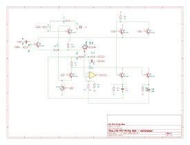

Sheet 3
The gain cell
Nine transistors whose only job is to have a gain you can change with a voltage. This is the part of a compressor that actually compresses, and the part where the design decisions matter most.

The problem
You need an amplifier whose gain a control voltage can set, over a wide range, without adding much distortion or noise. Commercially you would buy a THAT2180 or an SSM2018 and be done. Building one from discrete transistors is harder, and there are two common approaches.
The simple approach, and why it was rejected
The obvious method is a long-tailed pair: two matched transistors sharing a current source in their emitters. The gain of such a pair depends on how much current flows through it, so varying that "tail" current varies the gain. This is how the CA3080 works, and how classic pedals like the Ross and the MXR Dyna Comp get their compression.
It has a flaw that matters at line level. A transistor's internal emitter resistance is inversely proportional to its current. Turn the tail current down to reduce gain and that resistance goes up, which shrinks the voltage range over which the pair stays linear. In other words the cell distorts worst exactly when it is working hardest. Calculated distortion climbs from about 0.2% at 6 dB of gain reduction to several percent at 18 dB. Fine for a guitar pedal, poor for a mixing desk.
The approach used here: current steering
Instead of varying the current, keep it constant and vary where it goes.
Q3is a current source holding a fixed ~3 mA tail current, no matter what the control voltage does.Q1andQ2are the matched pair that turns the input voltage into a signal current riding on that fixed tail. Because the tail never changes, their linear range never changes either.- Above them sit four more transistors,
Q6–Q9, arranged in two pairs. Each pair can send its share of the current either to the output load or to the +16 V rail, where it is simply thrown away.
Gain is then just the fraction of the signal current that reaches the output. Send all of it and you have full gain; dump 99% of it and you have 40 dB of gain reduction. And because the transistors doing the amplifying never change their operating point, the distortion stays flat at every gain setting. That is the whole argument for the extra four transistors.
The trade in one line
Varying current is simpler and distorts more as it compresses. Steering current costs four extra transistors and distorts the same amount however hard it compresses.
How the steering is controlled
The four steering transistors have their bases tied to two nets, STA and
STB. What matters is only the difference between them:
| STB relative to STA | Where the current goes | Gain |
|---|---|---|
| +150 mV (resting) | Almost entirely to the output | Full gain, ~0 dB reduction |
| 0 mV | Split evenly | −6 dB |
| −60 mV | Mostly dumped to the rail | −20 dB |
| −120 mV | Nearly all dumped | −40 dB |
The entire 40 dB range fits inside about a quarter of a volt. That sensitivity is why the
control voltage is scaled down heavily by R68/R69 before it reaches
STB — a 10 V swing on the control line becomes a 270 mV swing here.
Why matched transistors are not optional
Q1/Q2 must be a matched pair, and Q6–Q9
a matched quad, all glued together so they stay at the same temperature. The steering balance
is set by base-emitter voltages that differ by only tens of millivolts — and a transistor's
base-emitter voltage drifts about −2 mV for every °C. If two transistors in the quad
sit at different temperatures, the cell's gain drifts with them. Bond them face to face and
put heatshrink over the group.
Recovering the signal
The steered current becomes a voltage across the collector load resistors R16
and R17, giving a differential signal — the wanted audio is
the difference between the two collectors.
Q4 and Q5 are emitter followers that buffer those collectors so the
next stage does not load them, and U1B is a difference amplifier with a gain of
6.67× that converts the difference back into a normal single-ended signal.
Taking the output differentially is what makes gain changes inaudible. When the cell changes
gain, the DC level at both collectors moves together. That common movement is exactly
what a difference amplifier rejects — so the "thump" you would otherwise hear on a fast
attack largely cancels. How well it cancels depends on R21–R24
matching, which is why they are 0.1% parts too.
The honest limitations
- Noise rises with gain reduction. The dump transistors keep generating noise even when carrying no signal. Expect the noise floor to climb roughly 6 dB by the time you are 20 dB into gain reduction. Every steering-type cell does this, including the commercial ICs.
- The control law drifts with temperature. Gain reduction per volt scales
with a quantity proportional to absolute temperature, so the dB-per-volt slope moves about
0.33% per °C. Over a 20 °C swing a nominal 20 dB of reduction shifts by a few
tenths of a dB. If that matters,
R68can be a +3300 ppm/°C tempco resistor mounted against the transistor quad.